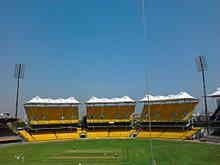

|
|
Sports venues, Markets and malls

M. A. Chidambaram Stadium
The M. A. Chidambaram Stadium is a cricket stadium in Chennai (formerly Madras), India, named after M. A. Chidambaram, the former President of BCCI and the Tamil Nadu Cricket Association. The stadium was formerly known as Madras Cricket Club Ground or Chepauk Stadium and was established in the year 1916 making it the oldest Cricket Stadium in India which is in continuous use. Commonly known as Chepauk, its first match was played 10 February 1934. Built by the East Coast Constructions and Industries, this stadium is where the Indian cricket team won its first ever Test victory in 1952 against England. Sunil Gavaskar notched up his record breaking 30th Test hundred on this ground in 1983-84. The India-Australia encounter in 1986-87 ended in a tie - only the second in the game's long history. Chepauk crowd is known to be amongst the most appreciative in the country. This was proved when those present gave a standing ovation to Saeed Anwar after his record breaking 194 against India in the Independence Cup match in 1997 and again when Pakistan won a Test match in 1999. A truly overwhelmed Pakistani team even made a lap of honour in appreciation of the spectators' sporting behaviour.
SDAT Tennis Stadium
Sports Development Authority of Tamil Nadu Tennis Stadium, commonly known as SDAT Stadium, sometimes also called Nungambakkam Tennis Stadium, is located in Nungambakkam, Chennai, Tamil Nadu, India, and plays host for the Chennai Open ATP Tennis championships held in the first week of January every year. The stadium was built in 1995 by the Government of Tamil Nadu on the occasion of South Asian Federation Games held in Chennai that year. The stadium has been the venue for Indian Open tennis tournament annually since 1997. The stadium also witnessed the birth of the celebrated Indian doubles pair of Leander Paes and Mahesh Bhupathi who won the first three editions of the Goldflake Open. The complex has five hard courts including the floodlit centre court which has a seating capacity of about 5,800.The third round Davis Cup tie in Asia/Oceania Group I between India and Australia took place at the SDAT Tennis Stadium in May 2009.The stadium again hosted a Davis Cup tie from 17–19 September 2010.

Spencer Plaza
Chennai has some unique places to offer for shopping. Art and crafts, contemporary and traditional artwork, antiques, jewellery etc. are available in the city. Traditional items like leaf and palmyra-fiber handicrafts from Tirunelveli, bronze and brass castings and traditional jewelry from Kumbakonam, metal works from Thanjavur, stone carvings from Mahabalipuram, silks from Kanchipuram are for sale in shops and boutiques.
George Town and Parrys Corner are wholesale markets of Chennai where one can purchase almost anything. Nearby Mint Street plays host to communities from Rajasthan and Gujarat and is where north Indian snacks can be sampled along with textiles, kitchenware and jewellery. Many streets are entirely devoted to selling one particular type of merchandise. The nearby Burma Bazaar is famous for its counterfeit electronic goods and media, Moore Market for its large number of bookstores. Pondy Bazaar located in T. Nagar, is home to huge multi-storey stores, unique to Chennai, which deal mainly in textiles and silks or gold, silver and diamond jewellery.
Shopping Malls in Chennai: - Spencer's Plaza - Chennai City Centre - Ampa Sky Walk Mall - Ramee mall, Teynampet - Express Avenue - Phoenix Market City - Abirami Mega Mall - Mayajaal - Vijaya Mall - Grand marina mall - Grand mall

Queens Land Park
Amusement Parks are important means of entertainment for the residents of Chennai city as well as the tourists. The amusement parks not only provide the fun and frolic for the children but they also help the elders to bring out the child in them. Though, there are a host of good amusements parks in Tamil Nadu, some of the best are located around Chennai. These parks are equipped with all the modern day facilities and gadgets and provide adventurous and fun filled entertainment for all, by the means of crazy activities and rides. Amusement park is an excellent idea for people wanting to spend good and quality time with their family members. What's more, small food restaurants and refreshment centers are also present here, offering mouth watering food, after all the day's activities.
Queens Land is a theme park in Poonamallee, Chennai, India. It opened in 2003 and covers 70 acres (28 hectares). The park is located by the Chennai-Bangalore Trunk Road between Sriperumpudhur and Poonamalle. There is parking for cars. Buses are available from Guindy and T. Nagar. All buses going to Sriperumpudhur from Chennai stop at Queensland. The entry fee is 350 INR for an adult and 250 INR for a child. Children shorter than 2 feet (0.61 m) tall are not charged. The park is open from 10 am to 5:30 pm on weekdays and 10:00 am to 6:30 pm on weekends and government holidays. It is closed on Mondays for maintenance, with the exception of holidays.
go to top
Home
Developed by SUGATO CHAKRABORTY (currently pursuing B.Tech in CSE from West Bengal University of Technology, developer at Boscom Software,2014)
|
|